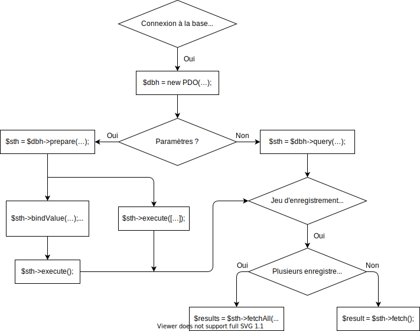

Interaction avec la base de données (PDO)
<?php
define('DATABASE_DSN', 'mysql:host=localhost;dbname=MyDatabase;charset=utf8');
define('DATABASE_USERNAME', 'root');
define('DATABASE_PASSWORD', '');
$dbh = new PDO
(
DATABASE_DSN,
DATABASE_USERNAME,
DATABASE_PASSWORD,
[
PDO::ATTR_ERRMODE => PDO::ERRMODE_EXCEPTION,
PDO::ATTR_DEFAULT_FETCH_MODE => PDO::FETCH_ASSOC
]
);
$query = 'SELECT * FROM Users';
$sth = $dbh->query($query);
$users = $sth->fetchAll();
$query = 'SELECT * FROM Users WHERE id = :id';
$sth = $dbh->prepare($query);
$sth->bindValue(':id', $_GET['id'], PDO::PARAM_INT);
$sth->execute();
$user = $sth->fetch();
$query = 'INSERT INTO Users (firstName, lastName) VALUES (?, ?)';
$sth = $dbh->prepare($query);
$sth->bindValue(1, $_POST['firstName'], PDO::PARAM_STR);
$sth->bindValue(2, $_POST['lastName'], PDO::PARAM_STR);
$sth->execute();
Ressources
- PDO
- DSN de PDO_MySQL (ligne 4)
- Attributs de PDO (lignes 15 et 16)
- PDO::query (ligne 23)
- PDOStatement::fetchAll (ligne 25)
- PDO::prepare (lignes 30 et 41)
- PDOStatement::bindValue (lignes 32, 43 et
44)
- PDOStatement::execute (lignes 34 et 46)
- PDOStatement::fetch (ligne 36)
- Constantes pré-définies de PDO
